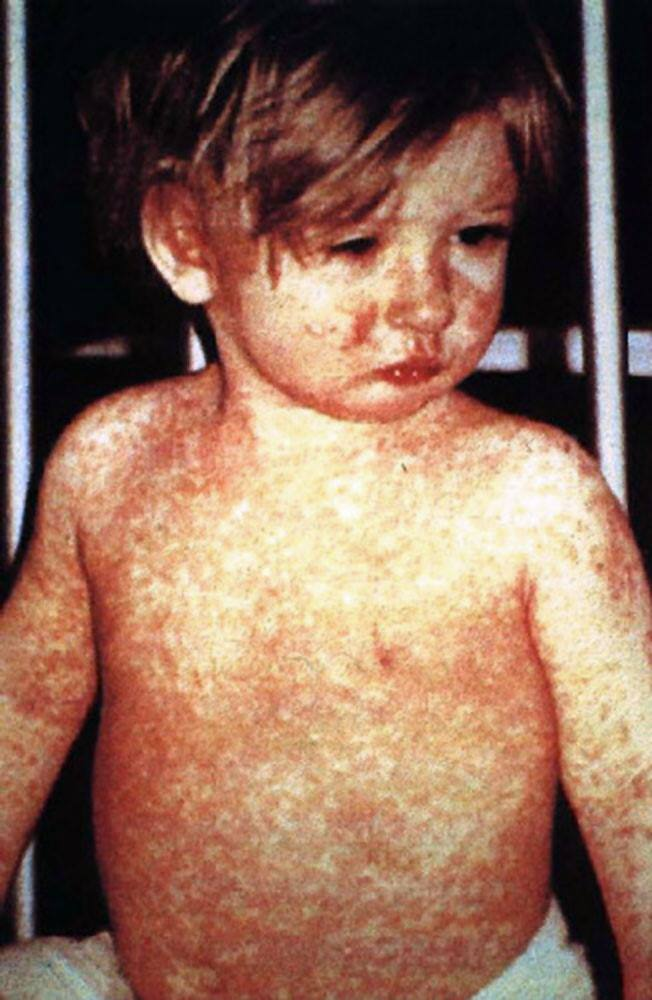

Guia de Vacinação
Introdução
As vacinas são produtos imunobiológicos constituídos por microrganismos, partes destes ou produtos
derivados, que depois de inoculados no indivíduo saudável produzem uma resposta similar à da
infecção natural induzindo imunidade sem risco para o vacinado.
Além da proteção individual, a maioria das vacinas tem ainda a capacidade de, a partir de
determinadas taxas de cobertura vacinal, interromper a circulação dos microrganismos entre pessoas
originando aquilo a que se chama “imunidade de grupo”. Este benefício para a sociedade é claramente
uma mais-valia da vacinação em massa.
O programa nacional de vacinação
O Programa Nacional de Vacinação é aplicado através de um Esquema Vacinal Recomendado a toda a
população presente em Portugal, de acordo com a idade.
O esquema vacinal recomendado tem como objetivo obter a melhor proteção, na idade mais adequada
e o mais precocemente possível.
O Programa Nacional de Vacinação (PNV) passará a incluir a partir de 1 de outubro de 2020:
- A vacina meningocócica B (MEN B) para todas as crianças, no primeiro ano de vida;
- A vacina HPV para todos os rapazes, aos dez anos;
- A vacina contra o Rotavírus (vacina ROTA) para grupos de risco.
As outras vacinas que integram o PNV vão continuar a ser administradas no mesmo esquema.
Além das vacinas abordadas no PNV, incluindo as novas inclusões, iremos também descrever
vacinas extra-plano nomeadamente a vacina contra o vírus Gripe e a vacina contra o vírus da hepatite
A.
As recomendações da Direção-Geral da Saúde em matéria de vacinação são fundamentadas em
pareceres da Comissão Técnica de Vacinação que continuamente avalia e propõe alterações ao Programa
Nacional de Vacinação, baseadas em critérios epidemiológicos, nas características das vacinas
disponíveis, em estudos e evidência científica e em avaliações económicas, nomeadamente de
custo-efetividade.
1. VHB
VHB - Vacina contra a Hepatite B
O que é?
Vacina de antigénio de superfície recombinante do vírus da hepatite B.
Para que serve?
Prevenção de infeção por vírus da hepatite B.
A hepatite B é uma inflamação do fígado que pode ser aguda e/ou crónica. Em cerca de 5% dos
casos, a hepatite B em adultos torna-se crónica, podendo provocar cirrose hepática e cancro do
fígado.
A maioria das pessoas infetadas pelo vírus da hepatite B (VHB) não desenvolve qualquer sintoma
na fase inicial/aguda da infeção, sobretudo quando ocorre durante a infância. A inexistência de
sintomas não é sinónimo de controlo da infeção.
Sintomas de infeção aguda:
- Febre
- Dor abdominal
- Cansaço
- Diminuição do apetite
- Náuseas
- Icterícia (coloração amarelada da pele e dos olhos)
- Urina escura
Nos casos mais graves, pode ocorrer insuficiência hepática (falência do funcionamento do fígado),
caracterizada por icterícia, acumulação de líquidos e confusão mental.
As vias de transmissão mais frequentes são:
- Via sexual (forma mais comum de transmissão na Europa Ocidental). Ter múltiplos parceiros sexuais e não utilizar preservativo são fatores que aumentam significativamente o risco.
- Via parentérica:
- Partilha de agulhas/seringas contaminadas, tatuagens, acupuntura, piercings (se utilizado material não esterilizado)
- Partilha de escova dos dentes, lâminas de barbear ou outros utensílios de uso pessoal que possam conter sangue contaminado
- Transfusões sanguíneas e transplante de órgãos (vias raras de transmissão)
- Transmissão vertical (de mãe para filho), que acontece durante ou imediatamente após o parto. A cesariana não impede a transmissão do vírus.
A vacinação é a forma mais efetiva de prevenir a doença, protegendo cerca de 95% a 99% das pessoas contra a Hepatite B. Esta vacina é essencial para reduzir a incidência e mortalidade por hepatite B, mantendo a doença controlada, uma vez que o vírus circula na comunidade, através de portadores crónicos. Também é recomendada nas viagens para países onde a doença é endémica (região do Pacífico ocidental e África subsariana).
Quando deverá ser administrada?
A vacinação está dividida em 3 doses, sendo que é dada a vacina contra a hepatite B (VHB) logo após o
nascimento, aos 2 e aos 6 meses de idade.
Vacinas:
- VHB – nascimento
- DTPaHibVIPVHB - Hexavalente - 2 e 6 meses de idade
Se não tiver feito no tempo indicado, pode ser iniciada até aos 18 anos e completada nas 3 doses
Efeitos adversos?
Os efeitos adversos mais comuns são dor, vermelhidão e tumefação ligeira no local da injeção; febre
moderada, com duração de um ou dois dias, mal-estar e fadiga. A vacina tem-se revelado segura, não
havendo prova que possa provocar reações secundárias graves.
As reacções alérgicas são muito raras.
Imunidade de Grupo?
Outra razão importante para vacinar é a existência de imunidade de grupo, que protege os que não podem ser vacinados ou não respondem à vacinação.
Bibliografia:
https://www.dgs.pt/documentos-e-publicacoes/programa-nacional-de-vacinacao-2017-pdf.aspx
https://www.sns24.gov.pt/tema/doencas-infecciosas/vhb/#sec-1
https://www.dgs.pt/paginas-de-sistema/saude-de-a-a-z/programa-nacional-de-vacinacao/vacinas-do-pnv/hepatite-b.aspx
2. Hib
Hib - Vacina contra doença invasiva por Haemophilus influenzae b
O que é?
Vacina de polissacárido capsular de Haemophilus influenzae do serotipo b, conjugado com proteína tetânica. Trata-se de uma vacina inativa conjugada.
Para que serve?
Protege contra infeções provocadas pela bactéria Haemophilus influenzae do serotipo b, que afeta sobretudo crianças com menos de 5 anos.
O que é a doença?
Esta bactéria coloniza por norma a nasofaringe e é transmitida através de gotículas de saliva, quando
o doente tosse ou espirra.
A vacina é essencial para manter a doença controlada nas crianças, uma vez que a bactéria
circula na comunidade através de portadores assintomáticos.
A bactéria pode causar doenças graves, como pneumonia, infeções na pele ou ossos e meningite.
Esta última tem uma taxa de letalidade elevada (5% a 10%), pelo que merece particular atenção, tendo
em conta também possíveis sequelas permanentes decorrentes da infeção, como a surdez, cegueira e
atraso mental.
A OMS estima que 2% da mortalidade infantil abaixo dos 5 anos de idade durante o ano de 2008
tenha sido causada por infeções de Hib.
Quando deverá ser administrada?
- 1ª dose vacina hexavalente DTPaHibVIPVHB;
- [Difteria + Tétano + Tosse convulsa] (DTPa) + Doença invasiva por Haemophilus influenzae b (Hib) + poliomielite (VIP) + 2ª dose de VHB.
- 2ª dose vacina pentavalente DTPaHibVIP;
- [Difteria + Tétano + Tosse Convulsa] (DTPa) + Doença invasiva por Hib + Poliomielite (VIP).
- 3ª dose vacina hexavavalente DTPaHibVIPVHB;
- 1º reforço vacina pentavalente DTPaHibVIP.
De referir que a vacina Hib faz parte do conjunto de vacinas que podem ser administradas separadamente (existe uma formulação monovalente) ou em combinações diferentes das referidas. A idade máxima para completar o esquema vacinal é até aos 5 anos, uma vez que as infeções são raras após esta idade.
Efeitos adversos (relativamente às formulações hexa e pentavalentes)?
As reações locais mais frequentes correspondem a dor, rubor e tumefação, 1 a 3 dias após a
administração da vacina. Ocasionalmente pode aparecer um nódulo indolor no local da injeção que,
geralmente, é reabsorvido lentamente ao longo de várias semanas.
Reações sistémicas mais frequentes (principalmente nas primeiras 24 horas): febre (≥38ºC),
choro persistente (durante ≥1 hora).
Imunidade de Grupo?
Sim. A imunidade de grupo é importante para proteger também os que não podem ser vacinados ou não respondem à vacinação. Esta é a forma mais efetiva de prevenir a doença (cerca de 95% a 99% das pessoas, desenvolvem anticorpos protetores, após a primovacinação).
Bibliografia:
World Health Organization. WHO | Estimated Hib and pneumococcal deaths
for children under 5 years of age, 2008. who.int.
https://www.who.int/immunization/monitoring_surveillance/burden/estimates/Pneumo_hib/en/.
Published 1 de Dezembro de 2013. Acedido Abril 11, 2020.
Leça A, Sarmento AM, Freitas G, et al. Norma no 016/2016, de 16/12/2016
- Programa Nacional de Vacinação 2017. Lisboa; 2017.
https://www.dgs.pt/directrizes-da-dgs/normas-e-circulares-normativas/norma-n-0162016-de-16122016-pdf.aspx.
Direção-Geral da Saúde. Doença invasiva por Haemophilus influenzae b.
dgs.pt
https://www.dgs.pt/directrizes-da-dgs/normas-e-circulares-normativas/norma-n-0162016-de-16122016-pdf.aspx.
Direção-Geral da Saúde. Programa Nacional de Vacinação: Perguntas e
Respostas. dgs.pt.
https://www.dgs.pt/paginas-de-sistema/saude-de-a-a-z/programa-nacional-de-vacinacao/perguntas-e-respostas.aspx.
Published 2020. Acedido Abril 11, 2020.
World Health Organization. WHO | Haemophilus influenzae type b (Hib).
who.int.
https://www.who.int/biologicals/areas/vaccines/haemophilus/haemophilus_influenzae_typeb_Hib/en/.
Published 14 de Novembro de 2011. Acedido Abril 11, 2020.
3. DTPa, VIP e Td
DTPa - Vacina contra difteria, tétano e tosse convulsa
O que é?
A Vacina DTPa é a Vacina combinada trivalente, que contém o toxóide diftérico (D), o toxóide tetânico (T) e o toxóide e subunidades de Bordetella pertussis (Pa). Administração Intramuscular.
Para que serve?
Prevenção contra a Difteria, o Tétano e a Tosse Convulsa/Pertussis.
O que é o Tétano?
O Tétano é uma infeção bacteriana grave caracterizada por espasmos musculares.
O que é a Difteria
A Difteria é uma infeção causada pela bactéria Corynebacterium diphtheriae.
Sintomas:
- Febre ligeira;
- Dor de garganta;
- Inflamação na garganta, que pode evoluir para uma membrana característica branca ou cinzenta.

As complicações mais graves incluem:
- Obstrução da via aérea (pela formação de membrana na garganta)
- Falência cardíaca e renal
- Paralisia dos músculos da deglutição (ato de engolir)
- Pneumonia
O que é a Tosse convulsa?
A Tosse Convulsa, também denominada como pertússis, é uma doença infecciosa aguda, causada pela
bactéria Bordetella Pertussis, que compromete a traqueia e brônquios.
Possui 3 fases:
- Catarral (1-2 semanas):
- Inflamação
- Corrimento nasal
- Tosse seca
- Febre baixa.
- Paroxística (2-6 semanas):
- Agravamento da tosse, podendo ser acompanhada de cianose (coloração azulada da pele e lábios) e inchaço da língua
- Ruído ao inspirar.
- Tosse pode provocar vómito, e é mais frequente de noite.
- Convalescença (2-6 semanas): Diminui progressivamente a tosse.
Quando deverá ser administrada?
1ª dose - 2 meses
2ª dose - 4 meses
3ª dose - 6 meses
4ª dose: 18 meses
5ª dose: 5 anos
Na 1ª e 3ª dose é administrada em vacina hexavalente ( com Hepatite B, Haemophilus Influenzae B -
Hib, Poliomielite - VIP e DTPa).
Na 2ª e 4ª em vacina pentavalente (com Haemophilus Influenzae B - Hib, Poliomielite - VIP e
DTPa).
A 5ª dose é trivalente com a DTPa.
A limitação dos 6 anos de idade é devida à componente Pertussis uma vez que, a partir dos 7 anos de idade, aquela componente provoca muitas reações adversas.
Efeitos adversos?
Os mais frequentes são a dor, o vermelhão (rubor) e inchaço (edema) no local da injeção, que ocorrem 1 a 3 dias após a administração da vacina.
Mais de metade das crianças desenvolvem febre poucas horas após a administração de DTPa, que
desaparece, em regra, ao fim de um dia.
É de realçar que a febre que se inicia mais de 24 horas após a administração de DTPa não
é considerada uma reação adversa à vacina.
Imunidade de Grupo?
Difteria - Sim (Doença eliminada)
Tétano e Tosse Convulsa - Não
Curiosidade
A vacina DTPa (acelular) foi introduzida no PNV em 2006, por substituição da vacina DTPw (de célula completa), que integrava o PNV desde a sua criação em 1965. A DTPa apresenta a mesma eficácia que a DTPw, mas apresenta menos reações adversas.
VIP - Vacina contra Poliomielite
O que é?
A VIP (Vacina contra a Poliomielite Inativada) é uma vacina que protege contra o vírus da
Poliomielite.
Trata-se de uma vacina inativada, constituída por três tipos de vírus da poliomielite (tipo 1,
tipo 2 e tipo 3).
Administração Intramuscular (ou subcutânea).
Para que serve?
Serve para prevenir a Poliomielite.
O que é a poliomielite
A poliomielite, também conhecida por paralisia infantil, é uma doença infecciosa viral aguda transmitida de pessoa a pessoa, principalmente pela via fecal-oral, que pode levar a paralisia muscular.
Quando deverá ser administrada?
1ª dose - 2 meses
2ª dose - 4 meses
3ª dose - 6 meses
4ª dose: 18 meses
5ª dose: 5 anos
A 1ª e 3ª doses são Vacinas Hexavalentes (com Hepatite B, Haemophilus Influenzae B, Poliomielite e
DTPa).
A 2ª e 4ª são pentavalentes (com Haemophilus Influenzae B - Hib, Poliomielite - VIP e DTPa).
A 5ª dose é tetravalente (com VIP e DTPa).
Td - Vacina anti-tetânica
O que é?
A vacina Td é uma vacina combinada bivalente contra o tétano e a difteria, constituída pelo toxóide tetânico e pelo toxóide diftérico. Administração Intramuscular (ou subcutânea).
Para que serve?
Proteção contra o tétano e difteria (descritos na DTPa).
Quando deverá ser administrada?
1º reforço - 10 anos
2º reforço - 25 anos
3º reforço - 45 anos
4º reforço - 65 anos
A partir dos 65 anos é recomendado a administração da vacina Td de 10 em 10 anos.
A 1ª e 3ª doses são Vacinas Hexavalentes (com Hepatite B, Haemophilus Influenzae B, Poliomielite e
DTPa).
A 2ª e 4ª são pentavalentes (com Haemophilus Influenzae B - Hib, Poliomielite - VIP e DTPa).
A 5ª dose é tetravalente (com VIP e DTPa).
Depois da primovacinação (nas 5 doses da vacina DTPa) e dos reforços, praticamente todos os indivíduos desenvolvem níveis protetores de antitoxina que vão diminuindo com o tempo. Embora algumas pessoas possam estar protegidas para toda a vida, decorridos alguns anos após a última dose administrada, o nível de antitoxina é geralmente inferior ao considerado protetor, pelo que se recomenda a administração de alguns reforços ao longo de toda a vida.
A vacina Td é também utilizada no âmbito do PNV para a vacinação de grávidas não vacinadas contra o tétano, para prevenir o tétano neonatal e do puerpério. É ainda utilizada na profilaxia do tétano na presença de ferimentos.
Efeitos adversos?
Os mais frequentes são a dor, eritema ou rubor e edema no local da injeção que ocorrem 1 a 3 dias após a administração da vacina. Frequentemente forma-se um nódulo duro e doloroso, no local da injeção, persistindo por algumas semanas.
Imunidade de Grupo?
Difteria - Sim (Doença eliminada)
Tétano - Não
Bibliografia:
https://www.dgs.pt/ficheiros-de-upload-3/pnv-vacinas-do-pnv-pdf.aspx
https://www.dgs.pt/documentos-e-publicacoes/programa-nacional-de-vacinacao-2017-pdf.aspx
4. VASPR
VASPR - Vacina contra o sarampo, parotidite epidémica e rubéola
O que é?
A VASPR é uma vacina combinada que protege contra o Sarampo, a Parotidite epidémica e a Rubéola.
É uma vacina trivalente vírica constituída por vírus vivos e atenuados do sarampo, da
parotidite epidémica e da rubéola. Administração Subcutânea.
Para que serve?
Confere proteção contra o Sarampo, a Parotidite epidémica e a Rubéola.
Sarampo
O Sarampo (Measles morbillivirus) é uma infeção provocada por um vírus.
Sintomas/Sinais
- Febre
- Tosse
- Conjuntivite
- Corrimento nasal
- Manchas vermelhas na pele, com início na face, que se propagam para o tronco e membros
- Sinais de koplik (pequenos pontos brancos (máculas), com halo eritematoso difuso, que aparecem na mucosa bucal)

Transmite-se por contacto direto com gotículas infecciosas ou por propagação no ar quando a pessoa infetada tosse ou espirra.
Habitualmente a doença é benigna, mas, em alguns casos, pode ser grave ou levar à morte.
Em casos raros pode levar a panencefalite esclerosante sub-aguda, que surge meses a anos após a
infeção por sarampo, culminando na morte do doente.
Parotidite epidémica
A parotidite epidémica, conhecida vulgarmente como papeira, é uma doença viral causada pelo vírus da
parotidite.
Sintomas/Sinais:
- Febre
- Dores musculares
- Dores de cabeça
- Cansaço
Rubéola
A rubéola é uma doença transmissível, causada pelo vírus da rubéola, sendo caracterizada por erupções
vermelhas na pele. É uma infeção viral contagiosa.
A vacinação é especialmente importante nas mulheres em idade fértil, uma vez que a infeção por
rubéola durante a gravidez pode estar associada a malformações graves do feto.
Quando deverá ser administrada?
1ª dose (VASPR 1) - 12 meses
2ª dose (VASPR 2) - 5 anos
Excecionalmente, a vacina pode ser administrada a partir dos 6 meses de idade, mantendo-se,
neste caso, a necessidade de administrar 2 doses posteriormente, nas idades recomendadas (VASPR1 e
VASPR2).
Efeitos adversos
Os mais frequentes são ardor, calor e/ou dor de curta duração, rubor ou edema no local da inoculação.
Pode também surgir febre (> 39,4ºC) e/ou exantema (rash), situações que são auto-limitadas, de
curta duração e que podem surgir 5 a 12 dias após a vacinação, cedendo bem aos antipiréticos nas
doses indicadas para a idade e peso.
Quais as Contraindicações?
- Reação anafilática a uma dose anterior da vacina, à neomicina, à gelatina ou a outros componentes da vacina
- Gravidez
- Tuberculose ativa
- Trombocitopenia ou púrpura trombocitopénica na sequência de uma dose anterior da vacina
- Imunodepressão grave, congénita ou adquirida devido a terapêutica imunossupressora
Estas contraindicações são devidas ao facto de se tratar de uma vacina constituída por vírus vivos e atenuados.
Imunidade de Grupo?
Sim.
Bibliografia:
https://www.dgs.pt/ficheiros-de-upload-3/pnv-vacinas-do-pnv-pdf.aspx
https://www.dgs.pt/documentos-e-publicacoes/programa-nacional-de-vacinacao-2017-pdf.aspx
https://www.sns24.gov.pt/tema/doencas-infecciosas/sarampo/#sec-1
https://www.sns24.gov.pt/tema/doencas-infecciosas/rubeola/
https://www.sns24.gov.pt/tema/doencas-infecciosas/papeira-ou-parotidite/
5. MenC
MenC - Vacina contra Neisseria meningitidis C
O que é?
Vacina de oligossacáridos ou polissacárido capsulares de Neisseria meningitidis do grupo C, conjugada com proteína tetânica ou diftérica.
Para que serve?
Previne a meningite bacteriana causada pela Neisseria meningitidis C.
O que é a meningite bacteriana?
A meningite bacteriana é uma doença transmissível que provoca inflamação das membranas que protegem o
cérebro e a medula espinhal (as meninges).
Sintomas/Sinais:
- Febre
- Dor de cabeça intensa
- Náuseas e vómitos
- Irritabilidade
- Confusão
- Cansaço extremo
- Agitação psicomotora
- Rigidez da nuca
- Alterações na pele
Esta infeção transmite-se por contacto direto com gotículas e secreções - através da tosse, espirros, beijos e proximidade física. Uma pessoa infetada pode não mostrar sintomas até 10 dias depois de ter sido infetada.
Quando deverá ser administrada? Para que grupos?
É dada uma só dose aos 12 meses de idade. No entanto, pode ser dada até aos 5 anos e em pessoas de
risco, com qualquer idade, no âmbito do PNV.
É importante vacinar pois a bactéria que provoca a meningite circula livremente na comunidade,
nomeadamente em pessoas sem sintomas.
Sabemos que 91% a 99% das pessoas vacinadas ficam protegidas contra a meningite C.
Efeitos adversos?
Esta vacina é muito segura, sendo que os efeitos adversos mais comuns são ligeiros e duram no máximo 1 a 2 dias, como uma dor no local do braço onde levou a vacina, cansaço ligeiro ou dores de cabeça.
Imunidade de Grupo?
Sim. Outra razão para vacinar contra a meningite C é para assegurar imunidade de grupo, para proteger quem não pode ser vacinado, bem como a baixa percentagem de pessoas que não responde à vacinação.
Bibliografia:
https://www.sns24.gov.pt/tema/doencas-infecciosas/meningite-meningococica/
https://www.cdc.gov/vaccines/vpd/mening/public/index.html
https://www.dgs.pt/documentos-e-publicacoes/programa-nacional-de-vacinacao-2017-pdf.aspx
6. Pn13
Pn13 - Vacina anti-Pneumocócica
O que é?
Há mais de 80 tipos diferentes de Pneumococos, mas uns são mais comuns que outros.
A vacina Prevenar13 (PCV13) cobre 13 tipos - Vacina de polissacáridos capsulares de
Streptococcus pneumoniae dos serotipos 1, 3, 4, 5, 6A, 6B, 7F, 9V, 14, 18C, 19A, 19F, 23F, conjugada
com proteína diftérica.
Para que serve?
Serve para proteção contra a infeção por Streptococcus Pneumoniae.
O que é a infecção por Streptococcus Pneumoniae?
A Infeção por Streptococcus Pneumoniae habitualmente causa pneumonia, meningite, sinusite e
otite (Infeção do ouvido médio, que são comuns nas crianças).
As infeções pneumocócicas geralmente causam febre e uma sensação de mal-estar geral. Para além
disso causam outros sintomas de acordo com a parte do corpo afetada.
Significativa mortalidade e morbilidade mundialmente.
Pneumonia Pneumocócica
Sintomas:
- Febre
- Calafrios
- Sensação geral de mal-estar
- Falta de ar
- Tosse.
Meningite Pneumocócica
Sintomas:
- Febre
- Dor de cabeça
- Sensação geral de indisposição/mal-estar
- Rigidez no pescoço.
Otite
Sintomas/Sinais:
- Dor de ouvido
- Tímpano vermelho e abaulado ou pus atrás do tímpano
Quando deverá ser administrada? Para que grupos?
A Prevenar13 é dada em 3 doses diferentes. Aos 2, 4 e 12 meses.
Para além da administração nestas idades há também um conjunto de indicações de grupos de risco
a quem a vacina é também oferecida.
Efeitos adversos?
A vacina é muito segura, apresentando efeitos adversos reduzidos e raros.
Efeitos adversos mais comuns são dor no local no braço onde foi administrada a vacina, cansaço
ligeiro ou dores de cabeça.
Imunidade de Grupo?
Sim. Uma das grandes vantagens da vacina é a imunidade de grupo conferida pela mesma. Desde que a vacina existe em Portugal foi notório o decréscimo na incidência das infeções por Pneumococos. Para esta imunidade de grupo é de salientar também a elevada percentagem de pessoas que faz a vacina, mesmo antes de esta pertencer ao PNV (antes de 2015).
Bibliografia:
https://www.dgs.pt/ficheiros-de-upload-3/pnv-vacinas-do-pnv-pdf.aspx
https://www.dgs.pt/documentos-e-publicacoes/programa-nacional-de-vacinacao-2017-pdf.aspx
7. HPV
HPV - Vacina contra infeções por vírus do Papiloma humano de 9 genótipos
O que é?
Vacina recombinante de proteínas L1 do vírus do Papiloma humano dos genótipos 6, 11, 16, 18, 31, 33, 45, 52, 58.
Para que serve?
A vacina contra o vírus do papiloma humano protege contra cerca de 9 genótipos (HPV9) tendo se
mostrado uma medida bastante efetiva na prevenção de muitos dos cancros provocados por esta família
de vírus.
O vírus do papiloma humano (HPV) é na verdade não 1 só vírus, mas um conjunto de mais de
200
vírus relacionados, sendo responsável por um elevado número de infeções que, na maioria das pessoas,
não evolui para um quadro sintomático.
Por esse motivo, muitos tendem a descuidar-se no que toca a medidas de prevenção, tornando
a
infeção por HPV numa das infeções sexualmente transmissíveis mais comuns, à escala mundial.
Nos poucos casos em que estão presentes sintomas, estes caracterizam-se pelo
aparecimento de
verrugas que devido ao seu reduzido tamanho e localização acabam por também passar
despercebidas.
Maioritariamente transmitido por via sexual.
Regra geral, este vírus tende a ser eliminado pelo nosso organismo, no entanto pode causar
cancro, nomeadamente cancro do colo do útero.
Dada a elevada probabilidade de exposição ao mesmo, as medidas de prevenção – nomeadamente
a
vacinação, devem ser tomadas quanto antes. Daí a recomendação precoce na vacinação.
Para que serve?
A vacinação está dividida em 2 doses, sendo que a primeira se recomenda aos 10 anos de idade e a
segunda passados 6 meses, até à data só administrada em raparigas.
No entanto, o Orçamento de Estado para 2019 definiu, em articulação com a Direção Geral de
Saúde, a integração da vacina supramencionada também para os rapazes, no âmbito do PNV, a partir de
outubro de 2020 (regulamentado pelo despacho nº12434/2019 do SEAS).
Se administrada depois dos 15 anos de idade a vacinação passar a requerer uma terceira dose.
Segundo o PNV, a idade máxima para iniciar esta vacinação é <18 anos, uma vez que o risco
de
já ter sido exposto ao vírus a partir desta idade é acrescido.
Efeitos adversos?
A vacina é considerada bastante segura, pelo que os únicos efeitos adversos que podem ocorrer versam sobre a dor, rubor e tumefação ligeira no local da injeção, febre, fadiga, cefaleias (dores de cabeça), náuseas, tonturas, artralgias (dores articulares) e mialgias (dores musculares).
Bibliografia:
https://www.sns24.gov.pt/tema/doencas-infecciosas/virus-do-papiloma-humano-hpv/
https://www.cdc.gov/hpv/parents/vaccine-for-hpv.html
https://dre.pt/home/-/dre/127608823/details/maximized
https://www.cuf.pt/mais-saude/porque-e-importante-vacina-do-hpv
8. Novas Vacinas
Vacina MenB - Vacina contra Neisseria Meningitidis Serogrupo B
O que é?
Vacina de proteínas recombinantes de Neisseria meningitidis do serogrupo B.
Para que serve?
Protege as crianças da Meningite.
O que é a meningite?
Esta é uma doença caracterizada pela inflamação de meninges que são membranas que protegem o cérebro
e medula espinhal.
Transmite-se através do contacto direto com gotículas e/ou secreções nasais, p.ex. espirros e
contacto próximo.
Sintomas:
- Febre
- Dor de cabeça intensa
- Náuseas e vómitos
- Irritabilidade
- Confusão mental
- Cansaço extremo
- Rigidez da nuca
- Erupções da pele
Possui uma alta taxa de letalidade (50%) e possibilidade de causar incapacidade se a criança não for vacinada em 10% dos casos.
Quando deverá ser administrada? Para que grupos?
2,4 e 12 meses de idade |Todas as Crianças.
Efeitos adversos?
Raros. Incluem sensibilidade e vermelhidão no local da injeção e febre.
Vacina Rota - Vacina contra Rotavírus
O que é?
Vacina oral de dupla dose que protege contra Rotavírus.
Para que serve?
Protege contra as gastroenterites agudas frequentes nos primeiros anos de vida causadas por Rotavírus.
O que é a gastroenterite aguda?
A infeção por rotavírus é a causa mais comum de diarreias graves nos bebés e crianças pequenas.
A transmissão é feco-oral.
Sintomas:
- Vómitos
- Diarreia
- Febre
- Desidratação
Quando deverá ser administrada? Para que grupos?
A vacina é administrada em duas doses. A primeira dose pode ser administrada a partir das 6 semanas
de idade.
Um intervalo de pelo menos 4 semanas deve existir entre as doses. O esquema de vacinação deve
preferencialmente ser administrado antes das 16 semanas de idade, mas deve estar completo pelas 24
semanas de idade.
A vacina estará indicada para grupos de risco a ser definido pela DGS.
Efeitos adversos?
Diarreia e irritabilidade.
Vacina HPV para rapazes - vide “HPV”
O que é?
Vacina injetável recombinante de proteínas do vírus do Papiloma Humano.
Para que serve?
Prevenção de infecção por vírus do Papiloma Humano.
A transmissão ocorre por contacto sexual.
Uma infecção pelo HPV num rapaz não vacinado pode evoluir para uma lesão maligna denominada
condiloma ano-genital.
O que é uma infecção por HPV?
Uma infecção pelo HPV num rapaz não vacinado pode evoluir para uma lesão denominada condiloma
ano-genital, que poderá evoluir para carcinoma do canal anal, da pele e de algumas mucosas.
A transmissão ocorre por contacto sexual.
(Mais informações em “HPV”)
Quando deverá ser administrada? Para que grupos?
Todos os rapazes aos 10 anos.
Durante vários anos foi administrada apenas a raparigas, mas este ano foi alargada para
rapazes.
Efeitos adversos?
Inchaço, dor e vermelhidão na área da injeção e dores de cabeça, são os mais frequentes.
Bibliografia:
https://www.dgs.pt/em-destaque/pnv-2020-temos-um-novo-programa-nacional-de-vacinacao.aspx
https://www.dgs.pt/directrizes-da-dgs/normas-e-circulares-normativas/norma-n-0072016-de-09082016-pdf.aspx
https://www.sns24.gov.pt/tema/doencas-infecciosas/meningite-meningococica/#sec-1
https://www.msdmanuals.com/pt-pt/profissional/SearchResults?query=Infec%c3%a7%c3%a3o+por+rotav%c3%adrus&icd9=MM955%3b787.91
https://www.ema.europa.eu/en/documents/product-information/rotarix-epar-product-information_pt.pdf
https://www.sns24.gov.pt/tema/doencas-infecciosas/virus-do-papiloma-humano-hpv/
9. BCG
BCG - Vacina Contra a Tuberculose
O que é?
Vacina de bacilos vivos atenuados de Mycobacterium bovis.
Para que serve?
Prevenção de formas graves de tuberculose na criança.
O que é a tuberculose?
A tuberculose é uma doença infeciosa transmitida por via inalatória, p.ex. tosse ou espirros. Pode
atingir vários órgãos, nomeadamente os pulmões.
Sintomas:
- Cansaço
- Tosse
- Expectoração
- Suores noturnos
- Falta de apetite
Quando deverá ser administrada?
Até aos 6 anos | Apenas são vacinadas com a BCG as crianças que pertencem a grupos de risco para a tuberculose ou as que vivem numa determinada comunidade, com uma elevada incidência da doença.
Efeitos adversos?
Reações locais mais frequentes: nódulo vermelho que evolui para uma vesícula, seguida de uma úlcera, em 2 a 4 semanas. Esta reação desaparece em 2 a 5 meses, deixando uma cicatriz superficial com diâmetro de 2 a 10 mm. Podem ocorrer reações alérgicas tais como vermelhidão e inchaço.
Bibliografia:
https://www.dgs.pt/documentos-e-publicacoes/programa-nacional-de-vacinacao-2017-pdf.aspx
10. Vacina contra o vírus da Gripe | Vacina contra o vírus da Hepatite A | Vacina Anti-varicela
Vacina contra o vírus da Gripe
O que é?
Na época 2019/2020 estão disponíveis em Portugal, no SNS e nas farmácias comunitárias, duas vacinas tetravalentes inativadas: Influvac Tetra e Vaxigrip Tetra.
Para que serve?
É a principal arma de prevenção contra a gripe em pessoas vulneráveis, prevenindo esta doença e todas as complicações que lhe possam estar associadas.
O que é a gripe?
A gripe é uma doença aguda viral que afeta principalmente as vias respiratórias.
Ocorre, habitualmente, entre novembro e março no hemisfério norte e entre abril e setembro no
hemisfério sul. Em Portugal, nos anos recentes, tem-se verificado que a maior atividade gripal tem
sido registada entre dezembro e fevereiro.
O termo síndrome gripal é utilizado para referir o conjunto de sinais e sintomas que permitem
caracterizar as manifestações do vírus da gripe no corpo humano.
O vírus da gripe é transmitido através de partículas de saliva de uma pessoa infetada, através
da tosse e dos espirros, mas também por contacto direto com partes do corpo ou superfícies
contaminadas com o vírus, por exemplo através das mãos.
O período de incubação, isto é, o período entre o momento em que a pessoa é infetada e o
aparecimento dos primeiros sintomas, é vulgarmente, de 2 dias, mas pode variar entre 1 e 5 dias.
Nos adultos os sintomas são:
- Mal-estar e cansaço
- Febre alta
- Dores musculares e articulares
- Dores de cabeça
- Tosse seca
- Inflamação dos olhos
Em crianças mais velhas os sintomas são semelhantes aos do adulto.
Nos bebés os sintomas da gripe são:
- Febre
- Sonolência
- Náuseas
- Vómitos
- Diarreia
- Dificuldades respiratórias
- Otites
Nas crianças os sintomas dependem da idade.Geralmente a gripe não é uma doença muito grave. Contudo,
pode provocar complicações.
A gripe é habitualmente uma doença de curta duração (3 a 4 dias), com sintomas de intensidade
ligeira ou moderada e evolução benigna, sendo que a recuperação completa demora cerca de 1 a 2
semanas.
Nos grupos de risco – pessoas com doenças crónicas e idosos – a recuperação pode ser mais longa
e o risco de problemas e complicações é maior, nomeadamente, pneumonia ou descompensação da doença
de base (asma, diabetes, doença cardíaca, pulmonar ou renal).
Quando deverá ser administrada? Para que grupos?
Segundo a DGS, a vacinação contra a gripe está fortemente recomendada para (sendo gratuita em 2020):
- Pessoas com idade igual ou superior a 65 anos (também está recomendada a partir dos 60 em alguns grupos)
- Doentes crónicos e imunodeprimidos (a partir dos seis meses de idade)
- Portadores de trissomia 21
- Grávidas
- Profissionais de saúde e outros prestadores de cuidados (por exemplo, em lares de idosos)
A vacina contra a gripe é também gratuita (em 2020) para:
- Bombeiros com atividade assistencial
- Residentes em instituições ou pessoas internadas em unidades do SNS
- Guardas prisionais e reclusos
O período de vacinação é iniciado em outubro e todos os grupos de risco devem estar vacinados até ao
final do ano, idealmente.
A vacinação anual é necessária, as pessoas devem ser vacinadas todos os anos contra a gripe.
Isto acontece porque os vírus da gripe estão em constante mudança, o que faz com que a imunidade que
a vacina nos oferece num ano não seja duradoura ou válida no ano seguinte
Como obter?
A vacina está habitualmente disponível, gratuitamente, nos centros de saúde para alguns dos grupos de
risco. Pode também ser adquirida nas farmácias, mediante receita médica, beneficiando de
comparticipação a 37%.
Nos centros de saúde, a vacina da gripe é administrada sem qualquer custo nos seguintes casos:
- Idade igual ou superior a 65 anos
- Residentes ou internados em instituições
- Pessoas com doenças crónicas dos pulmões, do coração, dos rins ou do fígado
- Diabéticos
- Grávidas
- Portadores de doenças que diminuam a resistência a infecções (imunodeprimidos, a partir dos 6 meses de idade)
- Profissionais de saúde e outros prestadores de cuidados (por exemplo, em lares de idosos)
Informe-se junto do seu médico ou enfermeiro se deve ser vacinado e onde pode ser administrada a vacina.
Efeitos Adversos:
Existe a ideia errada de que podemos "apanhar" gripe através da vacina. A vacina contra a gripe não
contém vírus vivos, pelo que não pode provocar a doença.
O que pode acontecer é o desenvolvimento de alguns efeitos que "imitam" os sintomas da gripe ou
constipação:
- Inchaço ou dor na zona onde foi administrada a vacina
- Náuseas
- Febre ligeira
Fale com o seu médico assistente antes de ser vacinado contra a gripe se é:
- Alérgico a ovos: a maior parte dos tipos de vacina da gripe contém uma pequena quantidade de proteína do ovo.
- Já teve uma reação alérgica grave à vacina da gripe: nestes casos, a vacinação não é recomendada.
A vacina é eficaz? Posso ter gripe mesmo tomando a vacina?
Sim. A vacina diminui muito o risco de contrair a infeção.
É possível mesmo após a vacinação ter gripe, dependendo de fatores como a idade ou o estado de
saúde geral e sobretudo se os vírus presentes na vacina desse ano não coincidam completamente com os
vírus dessa época de gripe.
No entanto, mesmo que tenha gripe, a pessoa vacinada terá um menor risco de ter complicações,
não devendo a doença ser tão grave como seria se não tivesse sido vacinado.
HepA - Vacina contra o vírus da Hepatite A
O que é?
Vacina (adsorvida) contra a hepatite A (inativada) - Adultos.
Vacina contra a hepatite A, inativada e adsorvida - Crianças e adolescentes
Para que serve?
Proteção contra o vírus da Hepatite A.
A hepatite A é uma infeção cujo principal modo de transmissão é por via fecal-oral, através da
ingestão de alimentos ou água contaminados com fezes, sobretudo em viajantes, ou por contacto
próximo com pessoas infetadas.
O vírus da hepatite A é eliminado nas fezes, em elevadas concentrações, desde 2 a 3 semanas
antes até uma semana após o aparecimento dos sintomas.
Sintomas:
- Febre
- Mal-estar
- Náuseas
- Vómitos
- Dor abdominal
- Falta de apetite
- Urina escura
- Icterícia (coloração amarelada da pele e dos olhos)
A frequência de sintomas depende, em regra, da idade do doente. A infeção só é sintomática em 30% dos casos com idade inferior a 6 anos. Em crianças mais velhas e adultos, a infeção provoca, geralmente, doença clínica em mais de 70% dos casos.
Quando deverá ser administrada? Para que grupos?
- Em contexto de pós-exposição:
- Contactos de pessoas com hepatite A, até 2 semanas após a última exposição.
- Em contexto de pré-exposição:
- Homens que praticam sexo anal ou oro-anal com outros homens;
- Os viajantes com destino a países endémicos para hepatite A.
- No âmbito do Programa Nacional de Vacinação:
- Candidatos a transplante hepático;
- Crianças sob terapêutica com fatores de coagulação derivados do plasma.
A vacinação contra a hepatite A é eficaz na prevenção da infeção em mais de 85% dos casos, quando administrada até 2 semanas após a exposição.
Efeitos adversos?
Os efeitos secundários são raros e, caso se façam sentir, são ligeiros e prendem-se com a própria toma, ou seja: dor, vermelhidão e inchaço no local da picada. Em alguns casos, verificam-se sintomas semelhantes aos da gripe (febre, dor de cabeça, arrepios, dores nos músculos e articulações) mas, normalmente, duram um dia. Mais raros ainda, são os casos em que se origina diarreia ou urticária.
Bibliografia:
https://www.cuf.pt/mais-saude/vacina-da-gripe
https://www.sns24.gov.pt/tema/doencas-infecciosas/gripe/vacinacao-contra-a-gripe
https://www.dgs.pt/directrizes-da-dgs/normas-e-circulares-normativas/norma-n-0192018-de-12122018-pdf.aspx
https://www.dgs.pt/saude-publica1/hepatite-a.aspx
https://www.sns24.gov.pt/tema/doencas-infecciosas/virus-da-hepatite-a-vha/
http://app7.infarmed.pt/infomed/download_ficheiro.php?med_id=9004&tipo_doc=fi
http://app7.infarmed.pt/infomed/download_ficheiro.php?med_id=4140&tipo_doc=fi
Vacina Anti-varicela
O que é?
A vacina contra a varicela é composta pelo VVZ vivo atenuado (estirpe Oka). Em Portugal está disponível sob a forma monovalente (apenas varicela).
Para que serve?
Proteção contra o vírus varicela-zoster.
O que é a varicela?
A varicela é uma das doenças transmissíveis mais comuns na infância, sendo bastante contagiosa.
É caracterizada por bolhas ou borbulhas que provocam comichão intensa, podendo afetar toda a
pele.
É uma doença infecciosa causada pelo vírus varicela zoster, do grupo Herpesvirus.
Sintomas:
- Febre ligeira (por vezes grave no adulto)
- Dor de cabeça
- Mal-estar
- Falta de apetite
- Erupção da pele
- falta de apetite
Surgem pequenas manchas vermelhas (máculas) que evoluem para lesões sólidas da pele, em horas,
seguindo-se, durante 3-4 dias, a formação de vesículas (pequenas bolhas) que progridem para a
formação de crostas. Estas lesões da pele caracterizam-se também pela comichão que causam.
A erupção da pele inicia-se no tronco, passando para extremidades como couro cabeludo, axilas,
boca, face, trato respiratório ou para áreas com irritação cutânea.
A varicela transmite-se de pessoa para pessoa:
- Por contacto direto, quando alguém toca nas borbulhas ou em objetos contaminados
- Por gotículas de saliva existentes no ar da pessoa com varicela, quando espirra, tosse ou fala
Os adolescentes, os adultos e os imunocomprometidos são mais suscetíveis a complicações graves.
Quando deverá ser administrada? Para que grupos?
Em Portugal a vacina da varicela não está incluída no Programa Nacional de Vacinação, mas está
autorizada pelo Infarmed e disponível para prescrição médica.
A vacina da varicela é recomendada em adolescentes e adultos suscetíveis.
Os grupos de risco incluem:
- Mulheres não imunes antes da gravidez
- Pais de crianças jovens, não imunizados
- Adultos ou crianças que contactam habitualmente com doentes imunodeprimidos
- Indivíduos não imunes em ocupações de alto risco (trabalhadores de creches e infantários, professores, profissionais de saúde)
Efeitos adversos?
No mês seguinte à imunização, até 10 % dos adultos e 5% das crianças desenvolvem uma erupção cutânea
associada à vacina, localizada à área da injeção ou generalizada.
A vacina não deve ser administrada a imunodeprimidos, grávidas, menores de 1 ano de idade e
hipersensibilidade a algum dos componentes da vacina e terapêutica concomitante com salicilatos.
Bibliografia:
https://www.sns24.gov.pt/tema/doencas-infecciosas/varicela/
https://www.spp.pt/UserFiles/file/Comissao_de_Vacinas/Recomendacoes%20sobre%20vacinas%20extra%20PNV%202015-2016.pdf